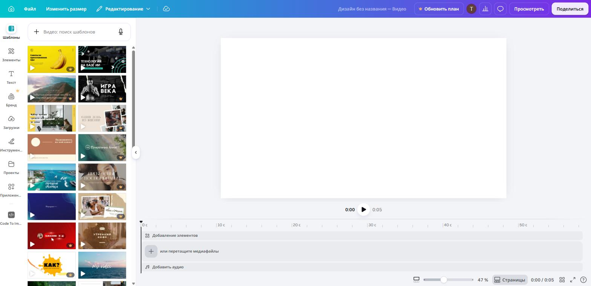
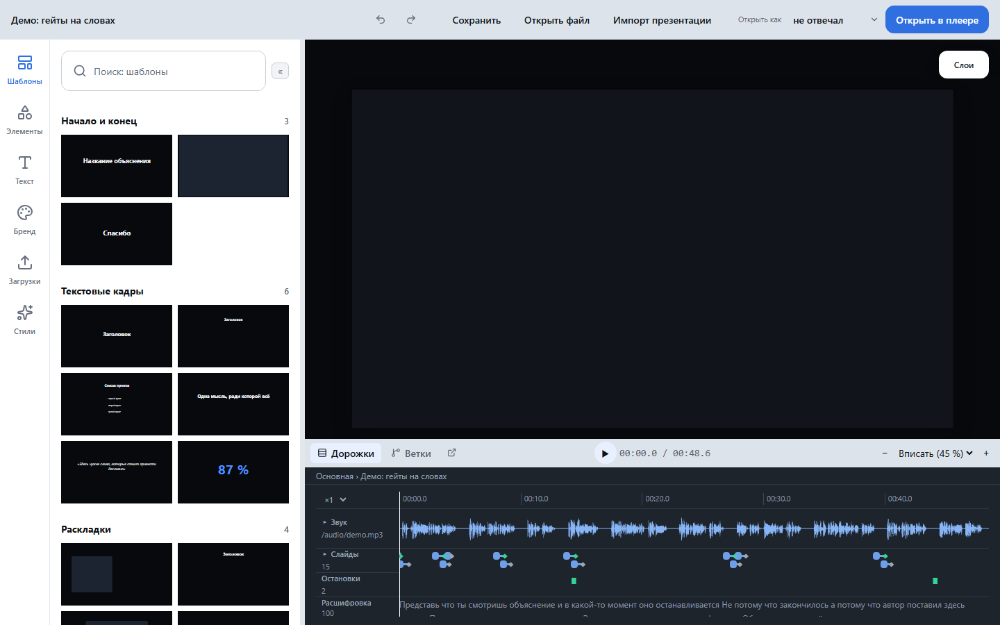
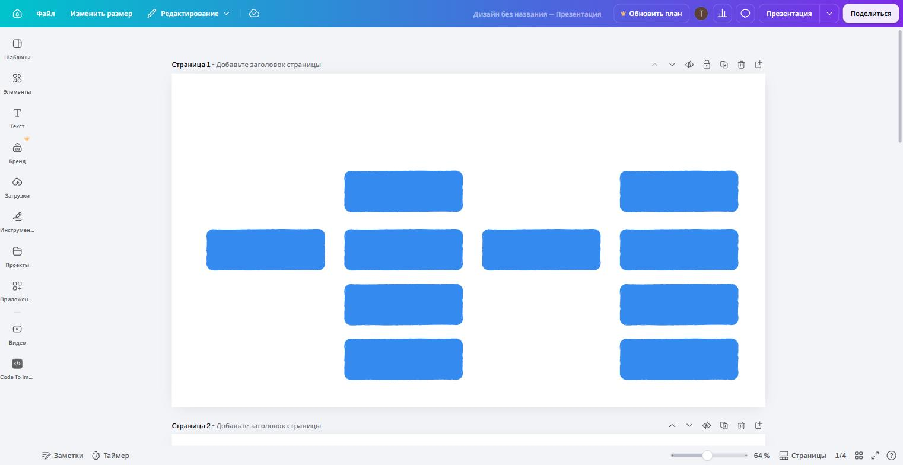
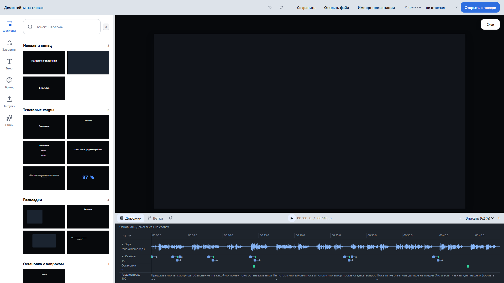
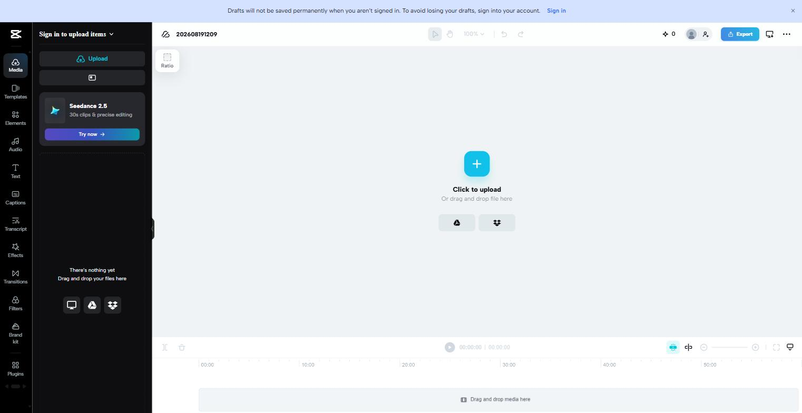
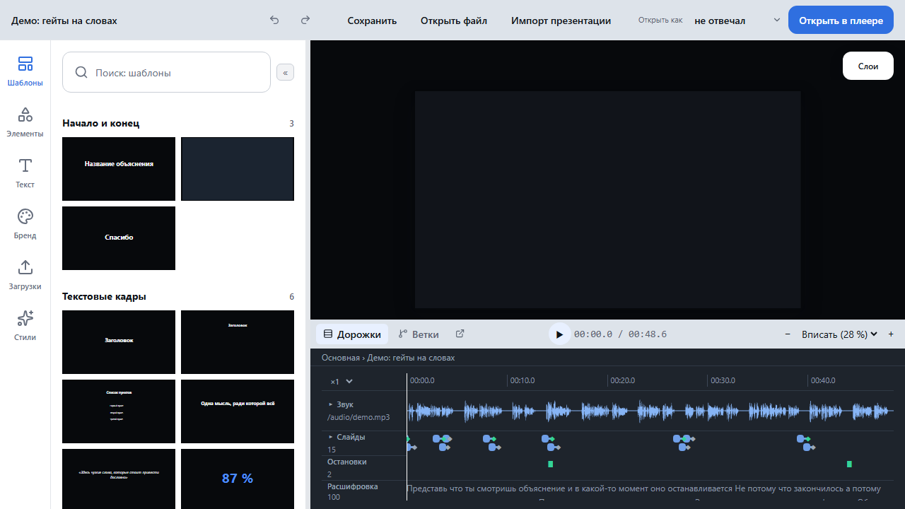

Натура — таймлайн видео в Канве. Что совпало: зона начинается ПРАВЕЕ рейки и панели, а не с нуля; линейка времени сверху во всю ширину; полосы подписаны словами слева; над дорожкой органов НЕТ, транспорт стоит по центру под холстом; масштаб и вид — в нижней строке окна справа.


Натура — Канва без выделения. Что совпало: справа от полотна НЕТ НИЧЕГО, полоса свойств не нарисована. Чего у натуры нет, а у нас есть: дверь «Слои» у правого края. Названо вслух — у Канвы списка слоёв сцены нет как функции вовсе, её «слои» живут внутри свойств выделенного объекта. Подделывать было нечего, и решение наше.


Натура — КапКут. Что совпало: рейка и панель — колонны во всю высоту окна, нижняя зона живёт правее них. Что различается: у КапКута справа от полотна СВОЯ панель свойств, у Канвы — пусто. Мы пошли за Канвой по прямому слову владельца.

